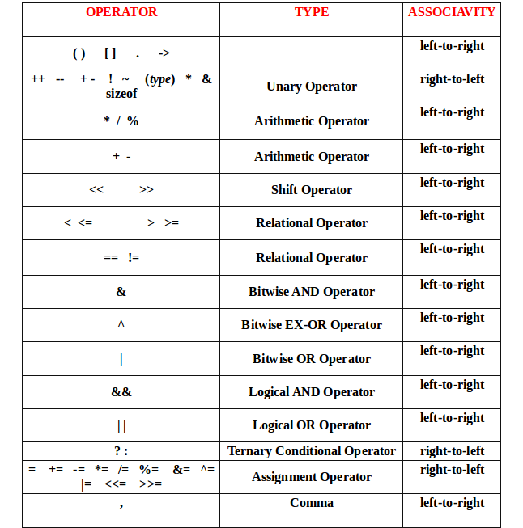

Chapter 3
Expressions
CONTENTS
- Variables and constants linked with operators
- Arithmetic expressions
- Uses arithmetic operators
- Can evaluate to any value
- Logical expressions
- Uses relational and logical operators
- Evaluates to 1 or 0 (true or false) only
- Assignment expression
- Uses assignment operators
- Evaluates to value depending on assignment
Binary Operator
| Operator Name |
Operator Symbol |
Expression |
| Addition: | + | 2*3+5-10/3 |
| Subtraction: | - | -1+3*25/5-7 |
| Division: | / | distance/time |
| Multiplication: | * | 3.14*radius*radius |
| Modulus: | % | 37%10 |
Unary operators
| Operator Name |
Operator Symbol |
Expression |
| Plus: | + | a++ |
| Minus: | - | --a |
Example
Suppose x and y are two integer variables,whose values are 16 and 5 respectively
| x+y |
21 |
| x-y |
11 |
| x*y |
80 |
| x/y |
3 |
| x%y |
1 |
| ++x |
17 |
| y-- |
5 |
All operators except % can be used with operands of all of the data types int, float,
double, char (yes! char also! We will see what it means later)
% can be used only with integer operands
If all operands of an operator are integer(int variables or integer constants),thevalue is always integer
Example:9/5 will be 1, not 1.8
int a=9, b=5;
printf("%d", a/b);
will print 1 and not 1.8
If at least one operand is real, the value is real
Caution:Since floating-point values are rounded total number of significant digits permissible,the final
value is an approximation of the final result
Example:1/ 3.0 * 3.0 may have the value 0.99999 and not 1.0
- Uses the assignment operator (=)
- General syntax:
variable_name = expression
- Left of = is called l-value,must be a modifiable variable
- Right of = is called r-value ,can be any expression
- Examples:
velocity = 20
b = 15; temp = 12.5
A = A + 10
v = u + f * t
s = u * t + 0.5 * f * t * t
- An assignment expression evaluates to a value same as any other expression
- Value of an assignment expression is the value assigned to the l-value
- Example: value of
a = 3 is 3
b = 2*4 -6 is 2
n = 2*u + 3*v - w is whatever the arithmetic expression 2*u + 3*v - w
evaluates to given the current values stored in variables u, v, w
- Several variables can be assigned the same value using multiple assignment operators
a = b = c = 5;
flag1 = flag2 = 'y';
speed = flow = 0.0;
- Easy to understand if you remember that
- the assignment expression has a value
- Multiple assignment operators are right-to-left associative
More Assignment Operators
- +=, -=, *=, /=, %=
- Operators for special type of assignments
- a += b is the same as a = a + b
- Same for -=, *=, /=, and %=
- Exact same rules apply for multiple assignment operators
Operation
| a |
b |
a&&b |
a||b |
| 0 | 0 | 0 | non-0 |
| 0 | non-0 | 0 | non-0 |
| non-0 | 0 | 0 | non-0 |
| non-0 | non-0 | non-0 | non-0 |
Logical Expressions
((count <= 100) || (count >= 200))
((math+phys+chem)/3 >= 60)
((sex == 'M') && (age >= 21))
((marks >== 80) && (marks < 90))
((balance > 5000) | | (no_of_trans > 25))
(!(grade == 'A'))
Unary negation operator (!)
- Single operand
- Value is 0 if operand is non-zero
- Value is 1 if operand is 0
Example
- (4 > 3) && (100 != 200)
- 4 > 3 is true, so value 1
- 100 != 200 is true so value 1
- Both operands 1 for &&, so final value 1
- (!10) && (10 + 20 != 200)
- 10 is non-0, so value !10 is 0
- 10 + 20 != 200 is true so value 1
- Both operands NOT 1 for &&, so final value 0
- (!10) || (10 + 20 != 200)
Same as above, but at least one value non-0, so final value 1
- Both of these are unary operators; they operate on a single operand
- The increment operator causes its operand to be increased by 1
- Example: a++, ++count
- The decrement operator causes its operand to be decreased by 1.
- Example: i--, --distance
Pre-increment v/s post-increment
- Operator written before the operand (++i, --i)
- Called pre-increment operator (also sometimes called prefix ++ and prefix --)
- Operand will be altered in value before it is utilized in the program
- Operator written after the operand (i++, i--)
- Called post-increment operator (also sometimes called postfix ++ and postfix --)
- operand will be altered in value after it is utilized in the program
- Uses relational and logical operators in addition
- Informally, specifies a condition which can be true or false
- Evaluates to value 0 or 1
- 0 implies the condition is false
- 1 implies the condition is true
Relational Operators Symbol & Name
Used to compare two quantities.
| Symbol | Name |
| < | is less than |
| > | is greater than |
| <= | is less than or equal to |
| >= | is greater than or equal to |
| == | is equal to |
| != | is not equal to |
Examples:
10 > 20 is false, so value is 0
25 < 35.5 is true, so value is 1
12 > (7 + 5) is false, so value is 0
32 != 21 is true, so value is 1
When arithmetic expressions are used on either side of a relational operator, the arithmetic
expressions will be evaluated first and then the results compared
a + b > c - d is the same as (a+b) > (c+d).
Note:For calculating two operand with Bitwise operator convert number firstly into binaray number afterthat apply operation on every single bits according to below mention table.
| Operand-1 | Operand-2 | Operand-1 &(Bitwise AND) Operand-2 | Operand-1 |(Bitwise OR) Operand-2 | operand-1 ^(Bitwise XOR) operand-2 |
| 0 | 0 | 0 | 0 | 0 |
| 0 | 1 | 0 | 1 | 1 |
| 1 | 0 | 0 | 1 | 1 |
| 1 | 1 | 1 | 1 | 0 |
Illustration 3.1
#include<stdio.h >
int main() {
int a = 25, b = 10;
float result;
result = a/b;
printf("The result is %f\n", result);
return 0;
}
| OUTPUT: |
The result is 2.000000
|
- Convert a variable from one data type to another data type
- Cast operator: (type_name) expression
Implicit casting
- Compiler can implicitly cast the values in an expression based on the declared variable type
- Implicit casting sequence priority:int -> long -> float -> double
- The implicit type for (a*b) is float for below example
int a = 10;
float b = 2.0;
- Rule: The final type of an expression is the highest priority type among all the variable types in the expression
Illustration 3.2
#include<stdio.h >
int main() {
int a = 55, b = 10;
float result;
result = (float) a/b;
printf("The result is %f\n", result);
return 0;
}
| OUTPUT: |
The result is 5.500000
|
Illustration 3.3
#include<stdio.h>
int main() {
int a = 25;
float b = 10.0;
float result;
result = a/b;
printf("The result is %f\n", result);
return 0;
}
Output:
The result is 2.500000 |
Parts of C program that tell the computer what to do
- Different types
- Declares variables etc.
- Assignment expression, followed by a
- For branching and looping, like if-else, for, while, do-while(to be seen later)
- Read/print,like printf/scanf

- Remember that each variable is stored at a location with an unique address
- Putting & before a variable name gives the address of the variable (where it is stored, not the value)
- It Can be put before any variable(with no blank in between)
int a =10;
printf("Value of a is %d, and address of a is %d\n", a, &a);
Expression Evalation Order of Operator & Associativity Table
